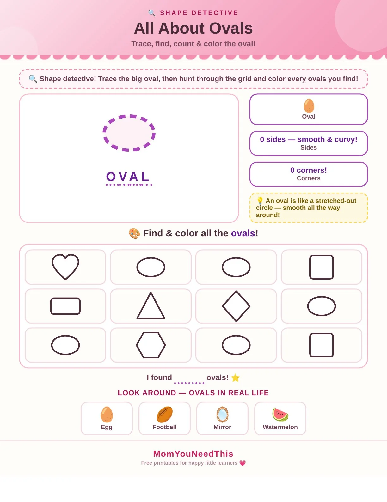

Oval Activities For Kids Trace, Color & Learn All About Ovals
Help your child explore ovals with printable activities that build shape recognition and comparing ovals to circles.
Quick Answer
This free printable oval activity is designed for toddlers and preschoolers ages 2–5. An oval is the set's gentle rebel: no straight sides, no corners at all — just one smooth curve, stretched a little longer than it is wide, like a circle pulled gently at both ends. The worksheet includes hands-on tracing, coloring and identification exercises that build early learning skills through play. Download and print at home with no signup needed — no account required, just print and start learning, and explore ovals in eggs, mirrors, watermelons and racetracks.
At a Glance
- Ages: Toddlers and preschoolers (ages 2–5)
- Activity: Learning the oval — no straight sides, no corners
- Skills: Shape recognition: oval
- Format: Printable worksheet (PDF)
- Cost: Free, no signup
🥚 Learn About an Oval
Every other shape on this site is learned by counting — sides and corners. The oval breaks the method on purpose: there is nothing to count. An oval has zero straight sides and zero corners, one continuous curve that is longer in one direction than the other. Recognizing it means judging a curve's stretch, which is a different and valuable kind of looking.
The oval-versus-circle question runs this page. A circle is the same width in every direction; an oval is longer one way. The test a child can do: turn the worksheet. A circle looks identical turned; an oval visibly changes — its long direction swaps with its short one. Tracing an oval is also a new hand skill: one endless smooth journey with no corners to pause at, the pencil speeding and slowing around the curves.

🖨️ Download Your Free Oval Printable
Trace the oval, color it in, and hunt for ovals around your home. Print it out, grab the crayons, and you're ready — no signup needed.
⬇️ Download Free Printable 🖨️ Print(opens in new tab)🎁 Free printable for toddlers & preschoolers
🔍 Oval Hunt Around Your Home
Turn learning into a game! Walk around your home together and spot things shaped like an oval — eggs, mirrors, watermelons, and racetracks. The kitchen is oval headquarters: eggs first (the original oval), then serving platters, spoon bowls, and the rims of mugs seen from above at an angle. Bathroom mirrors and picture frames extend the hunt, and a sliced watermelon settles any argument about what an oval is.
Add the turning test to every find: turn the object or walk around it and ask whether the shape still stretches the same way. An egg passes from every angle. Then the trick question — a circle drawn on a balloon you're squeezing? Stretch a round balloon and its circle becomes an oval in your hands: the shape that changed without a single corner appearing.
💡 Why Learn About the Oval?
The oval teaches children that “zero” is information. No sides and no corners sounds like nothing to learn, but identifying an oval means checking for the ABSENCE of features every other shape has — a subtler observation than counting, and a real cognitive step. It also breaks the counting habit at the right moment, showing that shapes can be told apart by curve and proportion, not numbers alone.
Ovals matter practically, too: they are the shape of eggs, tracks, many mirrors and frames, and the orbits planets travel (an orbit is an oval — an ellipse, the oval's grown-up math name). A child fluent in ovals reads the world more accurately, and the smooth one-stroke tracing builds the continuous pencil control that cursive writing will later demand.
📚 Keep Exploring Shapes
Discover more free 2D shape activities, printables, and learning ideas created for busy parents.
🎁 Back to 2D Shape Activities